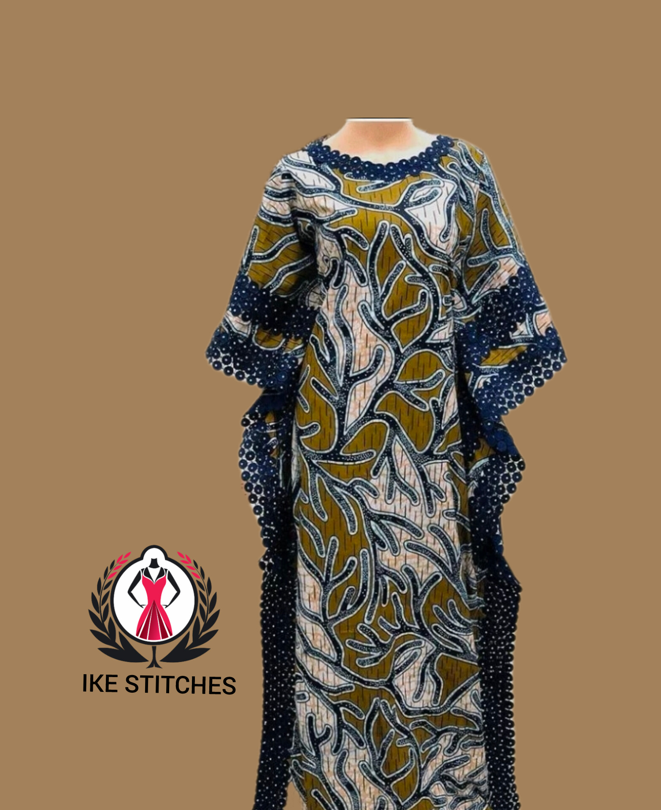
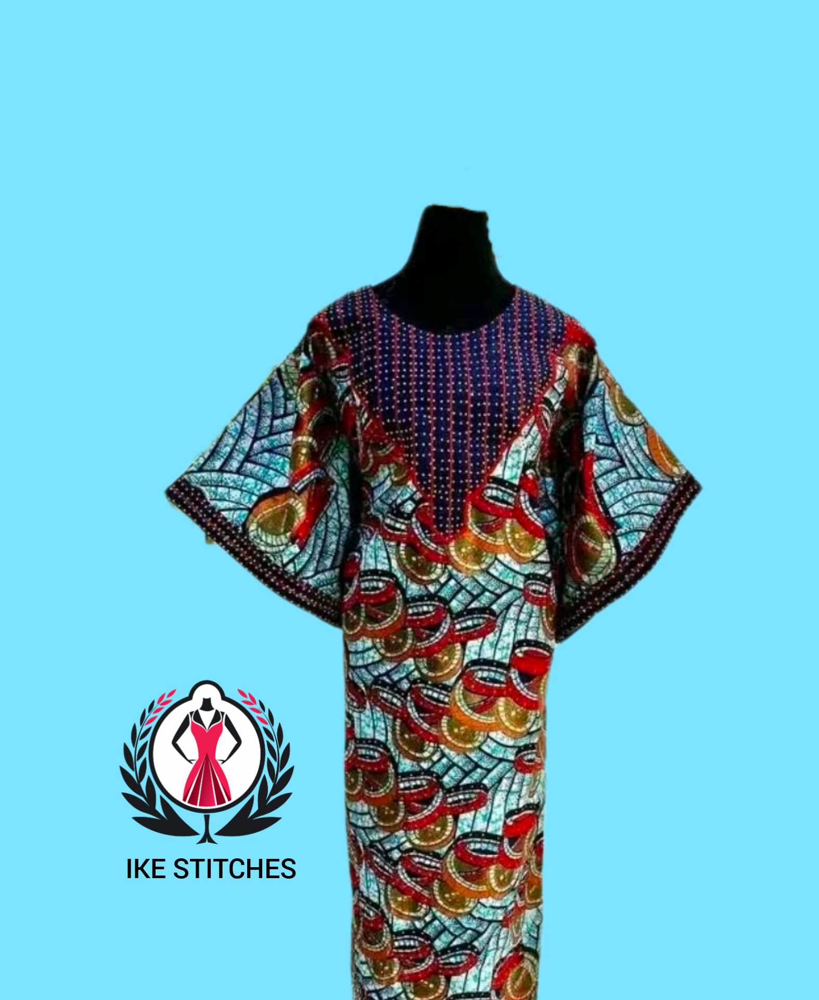

Trending
Top Ankara Styles For Luxury Weddings
May 2026
IKE-STITCHES
Luxury Ankara fashion continues to dominate African weddings with bold creativity, premium tailoring and elegant styling. Modern fashion designers are now transforming traditional Ankara into red-carpet worthy masterpieces.
Ankara remains one of the most powerful fashion fabrics because of its versatility, vibrant patterns and rich African identity. From fitted mermaid gowns to dramatic ball sleeve dresses, Ankara styles continue to evolve into luxury masterpieces suitable for weddings, engagements and celebrity occasions.

Some of the most popular luxury Ankara styles this year include:
To achieve a premium luxury appearance, combine your Ankara outfit with quality accessories, elegant gele styles and professional tailoring. The finishing and fitting of the outfit matter more than the fabric alone.
“Luxury fashion is not just about fabric, it is about confidence, elegance and presentation.”

Modern Ankara fashion continues to prove that African styles can compete globally in elegance and luxury. Whether you are attending a wedding, reception or high-class owambe, a well-tailored Ankara outfit will always stand out beautifully.
← Back To Blog